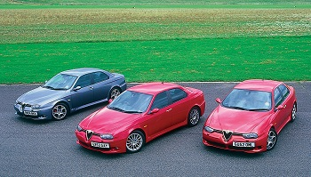
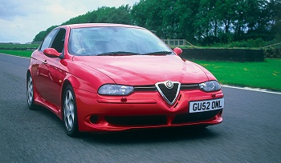
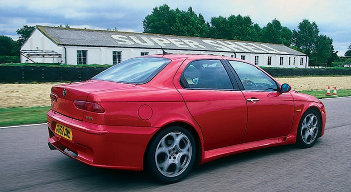
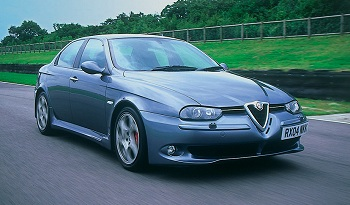
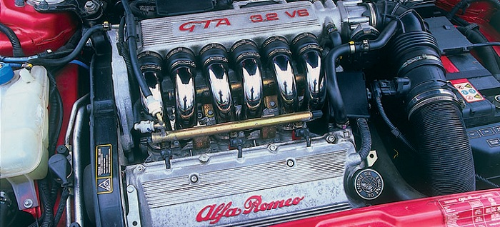
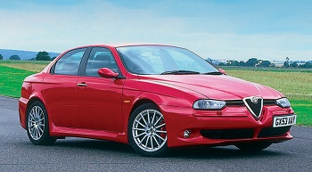
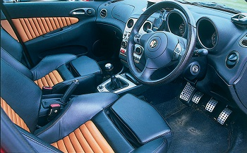
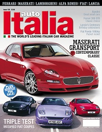

|
| When Alfa Romeo introduced the 250bhp 156 GTA four years ago, there were dark mutterings about understeer, torque-steer, axle-tramp and so on. But the thing worked, albeit with some provisos – and the likes of Monza Sports Tuning have since shown that these can be addressed. Necessity, though, has been the mother of invention here, and Alfa’s own recent revelation that forthcoming models mustering more than 200bhp will have all four wheels driven speaks volumes. |  |
 |
One of the cars he tested was GU52 OML, the coruscant Nuvola red example of dairy farmer Chris Carpenter (Moovola, surely?), which was then standard apart from a modified ECU. Chris, though, wanted the ultimate, multi-purpose GTA – still road-friendly, but suitable for serious track days too. He also wanted to enhance his chances in that gloriously politically-incorrect feast of hooligantics, the European Cannonball Run. It worked (he came 28th out of 128 in 2004), and a glance at its current spec shows why. At Goodwood recently we were able to try it in its latest, blood-curdling form, and compare it |

| Remedy it it does – it’s the second thing you notice in the ‘softer’ of the two MST cars, after the noise. Rick Capella’s silver-grey example might not be quite so radical as Chris’s car, but it’s obvious within the first 50 yards that the engine, anyway, has had a good seeing-to. The re-mapping in this case yields an extra 48bhp at the top, but the improvements lower down are even more dramatic, a heavily re-profiled torque curve giving the V6 real muscle from around 2000rpm. This is now a serious engine, endowing the GTA with vastly better driveability, and an even fruitier sound courtesy of the Supersprint exhaust system. |  |

 |
This was the only one of the three cars I took onto the circuit – amazingly, it passed the mandatory noise test despite its ground-shaking, rolling thunder bellow. Suddenly, the leafy West Sussex lanes become the wide-open spaces of the historic track, and you need to re-adjust accordingly. Initially, like most road cars, the GTA felt less impressive here – slower, less precise. But in this case it was illusory. Having the owner sitting next to you during a track test is always inhibiting, but the car really does encourage you to push – hard. Now you feel the full might of the 300-plus (whatever) horses, and can start to |
| It’s a tour-de-force, this thing, from its mighty engine to its uncanny ability to transmit 60 percent more power than Alfa considers feasible through its front wheels without histrionics. Add virtual race-car handling, and that all-important ‘Alfa-ness’, and it’s goodnight all you Japanese 4wd-Evo-WRC-lookalikes. But it comes at a price, and its slightly more serene – and rather cheaper – silver sister is almost equally satisfying on the road, and probably the more comfortable, practical everyday choice. However far you want to go, though, Monza Sports Tuning seems to have the bases covered. |  |
 |